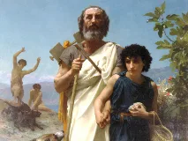
Homèrewiki-fr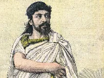
Sophoclewiki-fr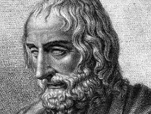
Euripidewiki-fr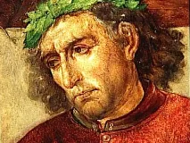
Virgilewiki-fr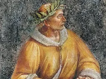
Ovidewiki-fr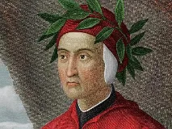
Dante Alighieriwiki-fr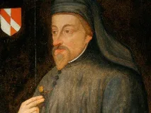
Geoffrey Chaucerwiki-fr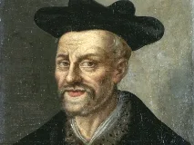
François Rabelaiswiki-fr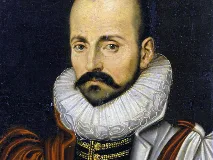
Michel de Montaignewiki-fr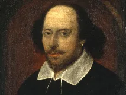
William Shakespearewiki-fr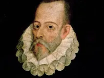
Miguel de Cervanteswiki-fr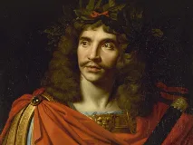
Molièrewiki-fr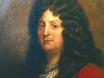
Jean Racinewiki-fr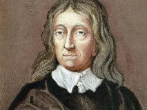
John Miltonwiki-fr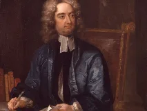
Jonathan Swiftwiki-fr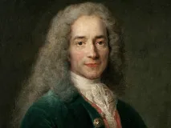
Voltairememo:philosophes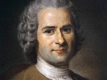
Jean-Jacques Rousseaumemo:philosophes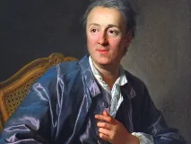
Denis Diderotwiki-fr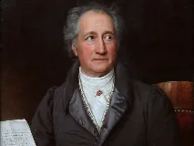
Johann Wolfgang von Goethewiki-fr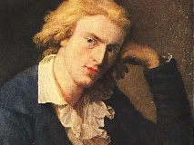
Friedrich Schillerwiki-fr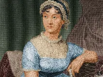
Jane Austenwiki-fr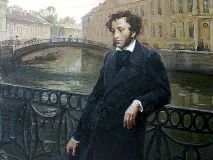
Alexandre Pouchkinebing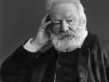
Victor Hugowiki-fr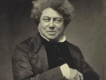
Alexandre Dumaswiki-fr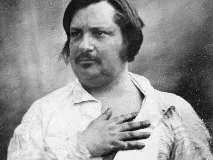
Honoré de Balzacwiki-fr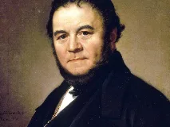
Stendhalwiki-fr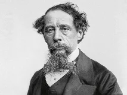
Charles Dickenswiki-fr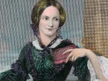
Charlotte Brontëwiki-fr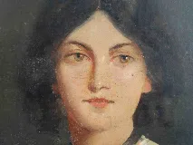
Emily Brontëwiki-fr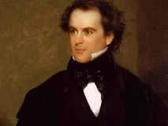
Nathaniel Hawthornewiki-fr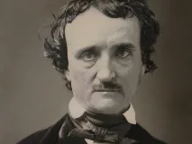
Edgar Allan Poewiki-fr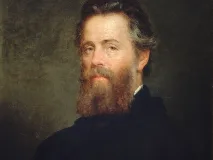
Herman Melvillewiki-fr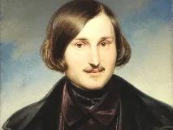
Nikolai Gogolwiki-fr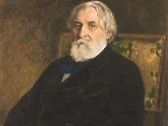
Ivan Tourguenievwiki-fr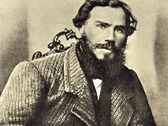
Léon Tolstoïwiki-fr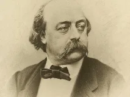
Gustave Flaubertwiki-fr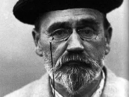
Émile Zolawiki-fr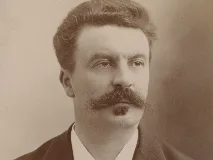
Guy de Maupassantwiki-fr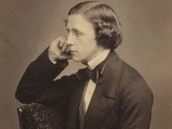
Lewis Carrollwiki-fr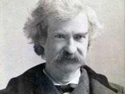
Mark Twainwiki-fr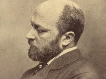
Henry Jameswiki-fr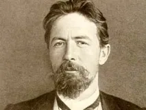
Anton Tchekhovwiki-fr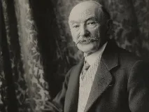
Thomas Hardywiki-fr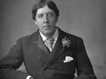
Oscar Wildewiki-fr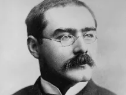
Rudyard Kiplingwiki-fr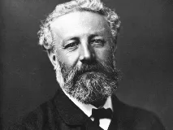
Jules Vernewiki-fr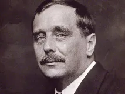
H.G. Wellswiki-fr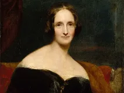
Mary Shelleywiki-fr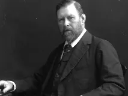
Bram Stokerwiki-fr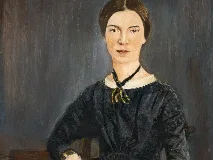
Emily Dickinsonwiki-fr